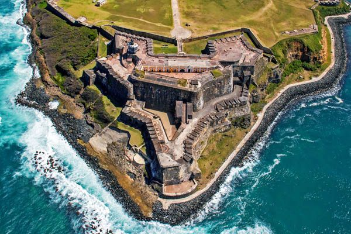
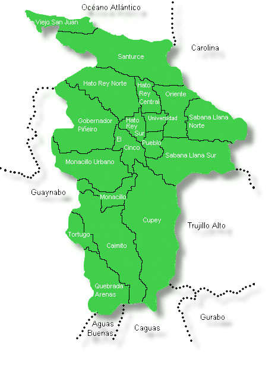

Informacion general
San Juan es la capital de Puerto Rico
San Juan es considerada una joya de la arquitectura colonial española, siendo una de las ciudades más antiguas del hemisferio de las Américas. En la ciudad está construido el Fuerte que se conocería La Fuerza, La Fuerza Vieja y finalmente La Fortaleza de Santa Catalina. Posee dos fortalezas: San Felipe del Morro y el Fuerte de San Cristóbal. San Juan fue fundado en el año 1521.
En su costa se encuentran, de oeste a este, la bahía de San Juan; la isleta de San Juan - donde está enclavado el Viejo San Juan; la puntilla; la punta del Morro, la punta Escambrón; el peñón San Jorge; la punta Las Marías; la laguna de San José - en su interior la isla Guachinanga; cueva San Patricio y cueva El Morro. Su superficie tiene 47.5 millas cuadradas, 123.5 kilómetros cuadrados, y está localizado en la costa norte central de la Isla. Su población es de 434,374 habitantes.
Situado en la costa norte. Por el norte limita con las aguas del Océano Atlántico; por el sur, con Aguas Buenas y Caguas; por el este, con Carolina y Trujillo Alto; y por el oeste, con Guaynabo.
La ciudad está organizada en 18 barrios: Caimito, El Cinco, Cupey, Gobernador Piñero, Hato Rey Central, Hato Rey Norte, Hato Rey Sur, Monacillo, Monacillo Urbano, Oriente, Pueblo de Río Piedras, Quebrada Arenas, Sabana Llana Norte, Sabana Llana Sur, San Juan Antiguo, Santurce, Tortugo y Universidad.
San Juan
-
1Su superficie es casi totalmente llana. Ubicado en la región de la Llanura Costanera del Norte, y en la Zona Cársica, muchos de los pequeños cerros que contenía su territorio han desaparecido ante el progreso. Las tierras más elevadas de San Juan están al sur. En el sudoeste, en el barrio Tortugo, está el cerro Magueyes, con unos 180 metros (590 pies) de altura sobre el nivel del mar; en el noroeste, en Gobernador Piñero, los montes de San Patricio, y hacia el este-nordeste en Sabana Llana Sur, los montes de Hatillo.
-
2Lo riegan el río Piedras, que nace en el barrio Caimito y desemboca en la bahía de San Juan, luego de recorrer aproximadamente 17 kilómetros; y sus afluentes el río Puerto Nuevo y las quebradas, entre otras, Las Curías, en la cual se forma el embalse de igual nombre; Los Guanos, Guaracanal, del Ausubo, Buena Vista, Mongil, Josefina, Doña Ana, Margarita y de los Muertos. También son parte de su sistema hidrográfico las lagunas, del Condado y San José, esta última, entre San Juan y Carolina, la cual se comunica con el mar a través del caño de Martín Peña; y el embalse Las Curías.
Geografía
La ciudad de San Juan está localizada en la costa norte de Puerto Rico y se extiende a lo largo de 123.5 kilómetros cuadrados (47.5 millas²). Es la capital de la Isla y su fundación data del siglo XVI. Se le conoce también como “la ciudad amurallada”, “ciudad capitalina”, “ciudad de las losas”, “ciudad colonial” y a sus habitantes como “los capitalinos” y “los senadores”, éste último en alusión a su equipo de béisbol. Constituye el municipio más poblado y con mayor densidad poblacional para un total de 442,447 sanjuaneros, según el Censo 2000. Sin embargo, su población ha experimentado un decrecimiento en las últimas décadas, producto del movimiento poblacional hacia los municipios adyacentes. La ciudad está organizada en 18 barrios: Caimito, El Cinco, Cupey, Gobernador Piñero, Hato Rey Central, Hato Rey Norte, Hato Rey Sur, Monacillo, Monacillo Urbano, Oriente, Pueblo de Río Piedras, Quebrada Arenas, Sabana Llana Norte, Sabana Llana Sur, San Juan Antiguo, Santurce, Tortugo y Universidad. El barrio más antiguo de la ciudad es San Juan Antiguo, conformado por la isleta de San Juan. Su santo patrón es San Juan Bautista, cuyas fiestas se celebran en el mes de junio.